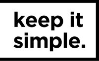

Professional Experience

| Since September 2022 | Business System Analyst, IBM, Fortaleza - Brazil |
| Main tasks |
|
| Technologies | Data & Analytics, IBM Cognos Analytics, Jira, MAC OS, Office 365, Prototyping, SCRUM, ServiceNow, SQL, Windows |

| From December 2021 to July 2022 | Product Owner/Business Analyst, KIS Solutions, São Paulo - Brazil |
| Main tasks |
|
| Technologies | Confluence, Jira, JSON, Kanban, MySQL, Office 365, Prototyping, SCRUM, SQL, UML, Windows |
| From December 2020 to January 2022 | Requirements Analyst, Fundação Cearense de Pesquisa e Cultura, Fortaleza - Brazil |
| Main tasks |
|
| Technologies | AdobeXD, Confluence, GitHub, Jira, Kanban, Lean Inception, MySQL, SCRUM, SQL, UML, Windows, XML |
| From March 2020 to September 2020 | Data Scientist - IVVQ (Internship), THALES AVS FRANCE SAS, Grenoble - France |
| Main tasks |
|
| Technologies | AWS, Elasticsearch, Grafana, JSON, KPI, Linux, Python, Ruby&Rails, Shell Script |
| From September 2019 to February 2020 | Crew Member, McDonald's, Courbevoie - France |
| Main tasks |
|
| Technologies | Autonomy, Communication, Organization, Soft Skills, Teamwork |
Dream Companies
- Samsung
- Microsoft
- Santander
- Amazon